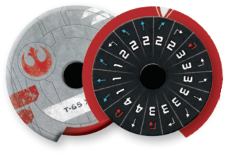

DIAL

Each ship type has its own unique dial. All expansion products contain a dial for each ship in that product. Dials are used during the Planning Phase to secretly select maneuvers.
-
When a player is instructed to set a ship’s dial, the player can choose the same maneuver that it already has selected unless stated otherwise.
-
Players are not allowed to touch or look at their opponents’ facedown dials. If a player wishes to touch or look at their own facedown dial, they must inform their opponent they wish to do so before touching the dial.
-
Each faction has its own Maneuver Dial Upgrade Kit. These dials assemble slightly differently than the standard dials and use a curved indicator below the maneuver instead to indicate selected maneuvers.